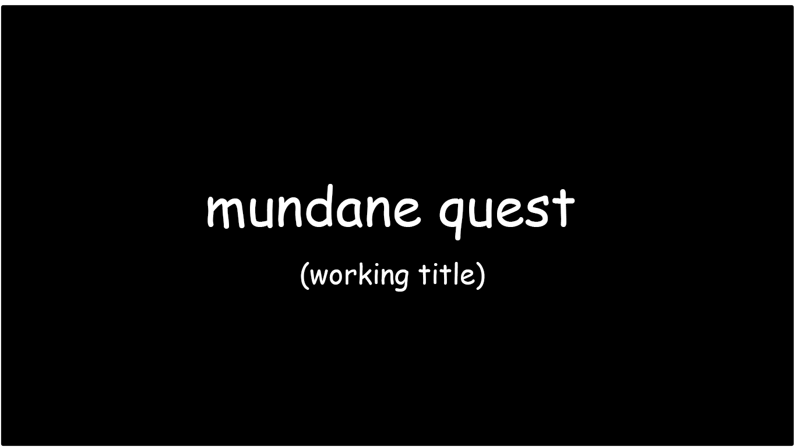

Here at Adam Games, we strive to make only the best of the best. Our games are so good, that it will blow your socks of, then put them back on, then blow them off again and smash you're TV. You thought Wii Sports was bad? Just wait to you play an Adam game. Your tv is not safe, nothing is safe. Your PS5 will be safe because the PS5 has no games. We will destroy everything you own that isn't a PS5, and that's not just a promise, it's an Adam Games promise.
ADAM WARE
Adam Ware is the first big hit from our studio, Adam Games. This new game is inspired from games of old, but with a new and refreshing spin on it. If you love playing videogames, then we guarentee that you'll love playing this. This is the first release from Adam Games in house development team, but it won't be the last!
Here are some more games that are being developed by our amazing business associates.
SOGGY SOCK SLINGER
In "Soggy Sock Slinger", you take on the role of a mischievous child who loves nothing more than throwing wet socks at targets. With a flick of your wrist, you can launch a soggy sock across the room, aiming for cans, bottles, and other objects. But beware, as the socks can be heavy and difficult to throw accurately. How many targets can you hit before you run out of ammunition?

MUNDANE QUEST
"Mundane Quest" is a game that celebrates the ordinary tasks we do every day. From grocery shopping to paying bills, every action is a quest in itself. You play as an average person, going about your daily routine, and facing everyday challenges along the way. Your goal is to complete each task as efficiently as possible, earning points for speed and accuracy. How well can you balance work and life in this mundane quest?
MOSQUITO HUNTER
In "Mosquito Hunter", you take on the role of an expert mosquito slayer. Armed with a virtual fly swatter, you must squash as many mosquitoes as possible before they fly away. As the game progresses, the mosquitoes become faster and more elusive, making it harder to score points. Can you rise to the challenge and become the ultimate mosquito hunter?